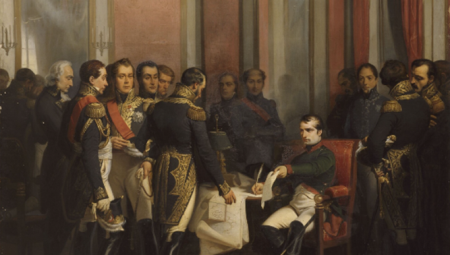
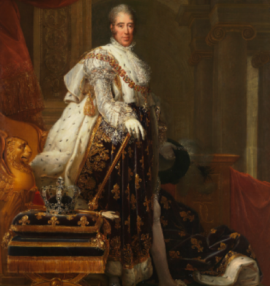
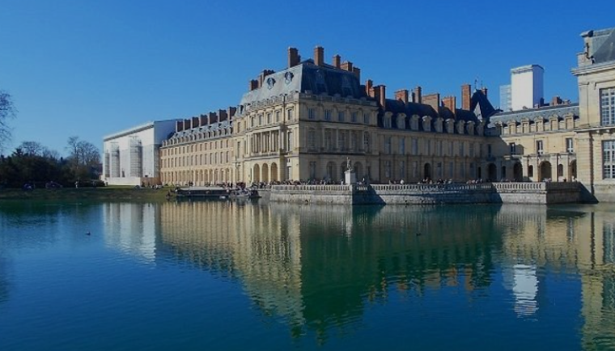

Création du chateau
12ème siècleLa création du château de Fontainebleau remonte au 12e siècle, marquant l'émergence de ce site historique en tant que résidence royale emblématique. D'abord construit comme une forteresse, le château a été progressivement transformé en une demeure royale sous le règne de François Ier au 16e siècle. Les premières phases de construction ont été initiées par Louis VII au milieu du 12e siècle, établissant ainsi les fondements de ce qui allait devenir un lieu de pouvoir et de prestige. Cependant, c'est véritablement sous François Ier que le château a connu une métamorphose architecturale majeure, avec l'introduction du style Renaissance et l'ajout d'éléments somptueux tels que la célèbre aile François Ier. Le château de Fontainebleau est donc le fruit de siècles d'évolution architecturale, reflétant l'histoire et le goût des souverains successifs qui ont contribué à sa grandeur.
François 1er
1515 - 1547Le règne de François Ier, qui s'est déroulé de 1515 à 1547, a profondément marqué l'histoire de la France, tant sur le plan politique que culturel. François Ier est souvent considéré comme le premier roi de la Renaissance en France, et son mécénat artistique a eu une influence significative sur le développement de l'art et de la culture dans le pays. Sous son règne, le château de Fontainebleau a été transformé en une résidence somptueuse, avec l'introduction du style Renaissance italienne. François Ier a également favorisé les échanges culturels avec l'Italie, invitant des artistes tels que Léonard de Vinci à sa cour. Sur le plan politique, François Ier a été impliqué dans des conflits majeurs, notamment la guerre d'Italie, où il a rivalisé avec Charles Quint. Malgré des revers militaires, son règne a consolidé le pouvoir royal en France et a établi des bases culturelles qui ont perduré au fil des siècles. Ainsi, le règne de François Ier reste une période clé de l'histoire française, marquée par un équilibre entre les ambitions politiques et les réalisations artistiques.
Coeur des adieux de Henri IV
1589 - 1610Henri IV, roi de France de 1589 à 1610, a laissé une marque significative sur le château de Fontainebleau en ordonnant la construction de la Cour des Adieux. Cette cour, érigée au début du 17e siècle, revêt une importance symbolique majeure. Henri IV, soucieux de consolider son règne et de rétablir la stabilité dans le royaume après les guerres de religion, a choisi Fontainebleau comme lieu pour cette initiative. La Cour des Adieux était destinée à marquer les départs solennels du roi et à symboliser son autorité incontestée. La conception architecturale de cette cour reflète une combinaison unique de symétrie et de grandeur, incarnant l'idée de l'autorité royale tout en permettant des adieux mémorables. Ainsi, l'ordonnance d'Henri IV pour la construction de la Cour des Adieux à Fontainebleau témoigne de son souci de consolider le pouvoir royal et d'inscrire son règne dans l'histoire architecturale et symbolique du château.

Abdication Napoléon
1814L'abdication de Napoléon Bonaparte, survenue en 1814, marque un tournant majeur dans l'histoire européenne. Après une série de défaites militaires, notamment la désastreuse campagne de Russie en 1812 et la défaite à la bataille de Leipzig en 1813, Napoléon se retrouva acculé par les coalitions européennes. Face à la pression croissante et à l'invasion imminente de la France, Napoléon prit la décision historique d'abdiquer le 6 avril 1814. Cet acte symbolique mettait fin à son règne impérial et ouvrait la voie à son exil sur l'île d'Elbe. L'abdication de Napoléon ouvrit également la porte à une période de restauration monarchique en France, marquant la fin de l'ère napoléonienne et le début d'une nouvelle phase dans l'histoire politique de l'Europe.
Abdication Charles X
1830L'abdication de Charles X en 1830 est un épisode significatif de l'histoire française qui a marqué la fin de la Restauration. Charles X, dernier monarque de la branche aînée des Bourbons, avait succédé à son frère Louis XVIII en 1824. Son règne fut marqué par des politiques conservatrices et autoritaires, provoquant des tensions croissantes avec l'opposition libérale. La crise atteignit son paroxysme avec l'ordonnance des "Quatre Ordonnances" en juillet 1830, restreignant les libertés politiques et suscitant l'indignation populaire. Face à l'opposition généralisée et à la montée de la révolution, Charles X abdiqua le 2 août 1830 en faveur de son petit-fils Henri, duc de Bordeaux. Cependant, cette abdication fut rapidement considérée comme invalide par les révolutionnaires, et la monarchie fut abolie. Cela aboutit à l'avènement de la monarchie de Juillet avec le règne de Louis-Philippe, marquant ainsi un nouveau chapitre dans l'histoire politique de la France.
Occupation Allemande
1940L'occupation allemande du château de Fontainebleau pendant la Seconde Guerre mondiale constitue un chapitre sombre de l'histoire de ce lieu emblématique. Après la défaite française en 1940, les forces d'occupation allemandes investirent la France, et le château de Fontainebleau, chargé d'histoire et de symbolisme, ne fit pas exception. Occupé par les troupes nazies, le château devint un quartier général stratégique pour les opérations militaires allemandes dans la région. Durant cette période, le château, autrefois lieu de résidence de souverains français, perdit une grande partie de sa splendeur, car les forces d'occupation utilisèrent ses salles somptueuses à des fins administratives et militaires. La présence allemande au château de Fontainebleau représenta non seulement une atteinte physique à son patrimoine, mais également une violation de son prestige historique. L'occupation prit fin avec la libération de la France en 1944, marquant la restauration progressive du château dans les décennies suivantes. Aujourd'hui, le château de Fontainebleau demeure un lieu chargé de mémoire, rappelant les sombres jours de l'occupation allemande pendant la Seconde Guerre mondiale.
De nos jours
De nos jours, le château de Fontainebleau demeure un joyau historique qui témoigne de plusieurs siècles d'histoire française. Classé au patrimoine mondial de l'UNESCO, le château est une attraction majeure, attirant des visiteurs du monde entier. Ses vastes jardins, ses élégantes salles de réception, ses galeries d'art et ses appartements royaux restaurés offrent une expérience immersive dans l'histoire et l'art français. Le château abrite une collection impressionnante de meubles d'époque, de tapisseries, de peintures et d'objets d'art qui reflètent les goûts des souverains qui l'ont occupé au fil des siècles. Les visiteurs peuvent explorer les appartements privés de Napoléon Ier, le célèbre escalier en fer à cheval, la chapelle Saint-Saturnin, et bien d'autres trésors architecturaux. Outre son importance historique, le château de Fontainebleau continue d'être utilisé à des fins officielles, accueillant parfois des événements culturels et diplomatiques. Ainsi, le château de Fontainebleau reste non seulement un site touristique incontournable, mais également un lieu vivant qui perpétue la richesse de son passé au cœur de la France.
